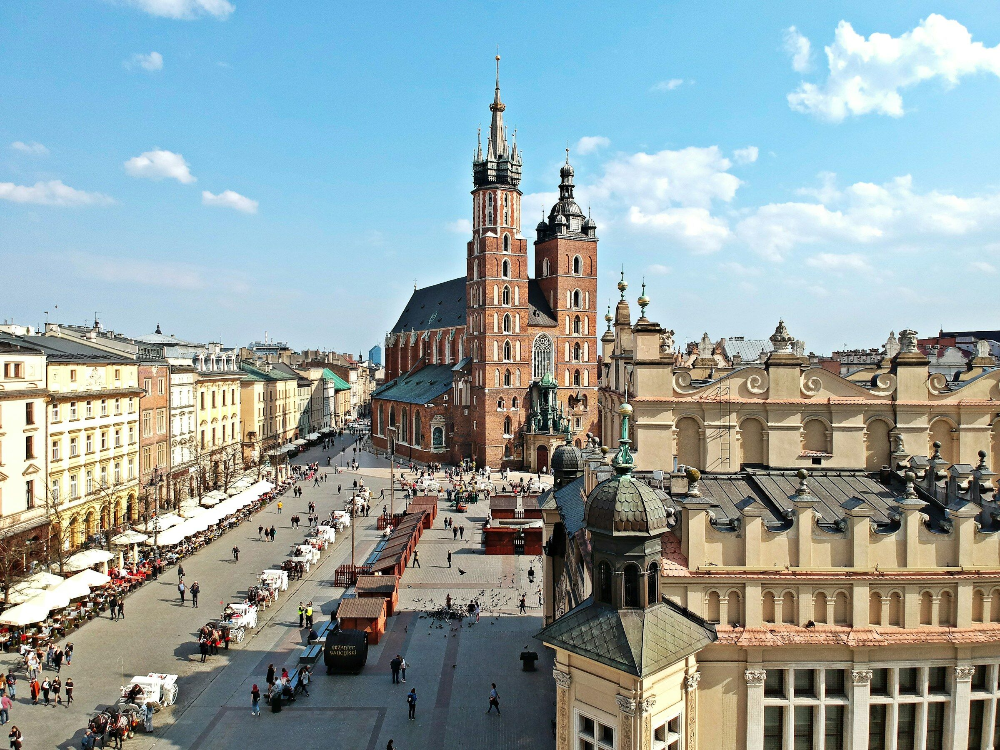

Company retreats, offsites and team travel
Planning guides, destination ideas, budgets and trends from the team that books your venue, your programme and every participant's flight.

How to Plan a Company Retreat: The Complete Guide
A step-by-step guide to planning a company retreat: goals, budget, destination, venue, flights, programme and follow-up, from a team that books it all.
Read the article →
The Best Company Retreat Destinations in Europe
The best destinations in Europe for a company retreat or offsite, by type of team and budget: sun, surf, culture, nature and great value, with flight tips.

The Best Company Retreat Planning Companies in Europe
An honest overview of company retreat planners in Europe, what each type does well, the questions to ask, and how to choose the right partner for your team.

Company Offsite Statistics: What the Data Says
Key company offsite statistics from recent reports: how often companies meet, budgets, goals, favourite months and destinations, and what it means for you.

Company Offsite Trends for 2027
The company offsite trends shaping 2027: purpose-led retreats, smaller and more frequent meetups, shoulder-season travel, local experiences and smarter budgets.

Company Offsite vs Retreat vs Seminar: What's the Difference?
Offsite, retreat, seminar, kickoff, incentive: what each term really means, when to use which format, and how to choose for your team.

How Much Does a Company Retreat Cost Per Person in Europe?
Real cost ranges for a company retreat in Europe, per person and flights included: venue, meals, activities, transfers, plus the hidden costs most budgets miss.

Company Retreat Checklist: 12 Weeks to Departure
A week-by-week company retreat checklist: budget, venue, flights, programme, communication and day-of logistics, so nothing is forgotten.

DIY Offsite vs Agency: What You Really Save
Should you plan your company offsite yourself or use an agency? A clear comparison of time, cost, risk and results, with a simple way to decide.

Greece for Company Retreats: Athens, Crete, Peloponnese or the Cyclades?
Planning a company retreat in Greece? Compare Athens and the Riviera, Crete, the Peloponnese and the Cyclades, with activities, seasons and budget tips.

Group Flights for Company Retreats: How to Fly 40 People from 8 Cities
How to book flights for a company retreat when your team lives in several cities: coordinated arrivals, group fares, one budget and real support.

How to Choose an Offsite Venue: 10 Questions to Ask
The 10 questions to ask before booking a company retreat venue: meeting rooms, Wi-Fi, rooms, food, exclusivity, access, contracts and more.
Hybrid Work and the Rise of the Quarterly Offsite
Why hybrid and remote companies are moving to quarterly offsites, how to plan a lighter meetup format, and how to keep costs and logistics under control.

Incentive Trip Ideas: How to Reward Your Top Performers
Incentive trip ideas that people remember: destinations, experiences, surprises and how to structure a reward trip for 10 to 100 top performers.

Leadership Retreat Agenda: A 3-Day Template
A proven 3-day leadership retreat agenda with session ideas, timings, facilitation tips and the right venue, for executive teams of 6 to 25 people.

Mallorca Company Retreat Guide: Fincas, Villages and Coves
How to plan a company retreat in Mallorca: where to stay, the best areas, team activities, ideal seasons and what it costs per person, flights included.

Morocco Offsite Guide: Marrakech, Agafay and Taghazout
How to plan a company offsite in Morocco: riads in Marrakech, desert camps in Agafay and surf in Taghazout, with seasons, logistics and budget tips.

Your 2027 Offsite Calendar: When to Go and When to Book
A month-by-month guide to planning company retreats in 2027: the best destinations for each season, peak periods to avoid and when to book.

How to Convince Your CEO to Fund a Company Offsite (with ROI)
A practical business case for a company offsite: the costs, the measurable returns, the arguments that work with leadership, and a one-page template.

Poland for Company Retreats: Kraków, Zakopane and Gdańsk
Why Poland is Europe's best-value retreat destination, and how to plan an offsite in Kraków, the Tatra mountains around Zakopane, or Gdańsk on the Baltic.

Portugal for Company Retreats: Lisbon, Algarve, Ericeira, Porto
Why Portugal is Europe's favourite retreat destination, and how to choose between Lisbon, the Algarve, Ericeira, Porto, the Douro, Madeira and the Azores.

Remote Team Retreats: How to Bring a Distributed Team Together
How to plan a retreat for a remote or distributed team: choosing a destination everyone can reach, coordinating flights, and a programme built for connection.

Sales Kickoff Ideas That Actually Energise the Team
Sales kickoff ideas for themes, agendas, venues, awards and activities, plus how to run an SKO abroad for 30 to 500 people without the stress.

Strategy Workshop Formats for Your Next Offsite
Proven workshop formats for strategy days at an offsite: pre-mortems, 1-2-4-All, start/stop/continue, priority voting and more, with timings and tips.

Surf Office Alternatives: Choosing a Retreat Partner in Europe
Comparing Surf Office alternatives for your company retreat: what to look for, the different types of planners, and how to choose the right fit for your team.

Surf Retreats for Teams: Ericeira, Taghazout and Beyond
Why surf retreats work so well for teams, the best surf destinations for company offsites, how to mix lessons with workshops, and what beginners should know.

25 Team-Building Activities Adults Actually Enjoy
Team-building activities that don't feel forced: outdoor adventures, food experiences, creative workshops and city games for company retreats of any size.

TeamOut Alternatives: How to Choose the Right Retreat Partner
Looking for TeamOut alternatives? A fair comparison of retreat planning options in Europe and the key questions to ask, including who books your team's flights.

Wellness and Sustainable Offsites: How to Plan a Retreat That Recharges
How to plan a wellness-focused, lower-impact company retreat: venues, programme ideas, travel choices and local partners that make a real difference.

The Best Winter Offsite Destinations in Europe
Where to hold a company retreat in winter: mild-weather escapes in southern Europe and Morocco, snowy mountain lodges and festive cities, with tips on dates.
Venue, programme, activities, every participant's flights and budget per person. No commitment.